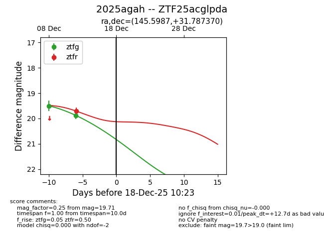
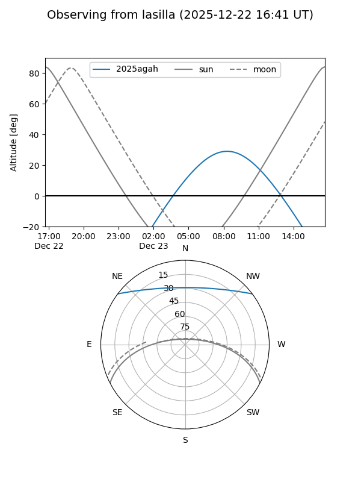
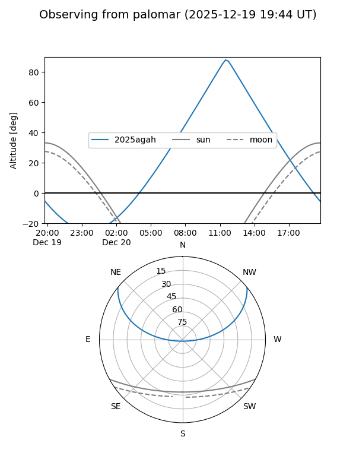
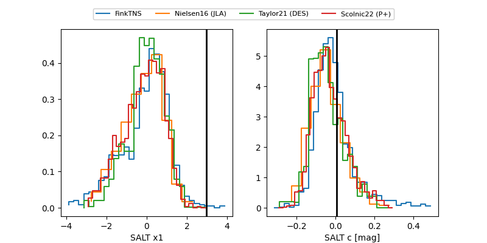

2025agah
Target 2025agah at 2025-12-20 13:14
Aliases and brokers:
FINK: fink-portal.org/ZTF25acglpda
Lasair: lasair-ztf.lsst.ac.uk/objects/ZTF25acglpda
ALeRCE: alerce.online/object/ZTF25acglpda
TNS: wis-tns.org/object/2025agah
YSE: ziggy.ucolick.org/yse/transient_detail/2025agah
alt names
ZTF25acglpda (ztf,fink_ztf)
2025agah (tns,yse)
Coordinates:
equatorial (ra, dec) = 145.5987,+31.78737
equatorial (HMS+DMS) = 09:42:23.68,+31:47:14.53
galactic (l, b) = (194.6890,+48.90356)
Flags:
Photometry:
last ztfg=20.02, ztfr=19.98
3 ztfg, 2 ztfr detections
Lightcurve

Visibility


Additional plots
